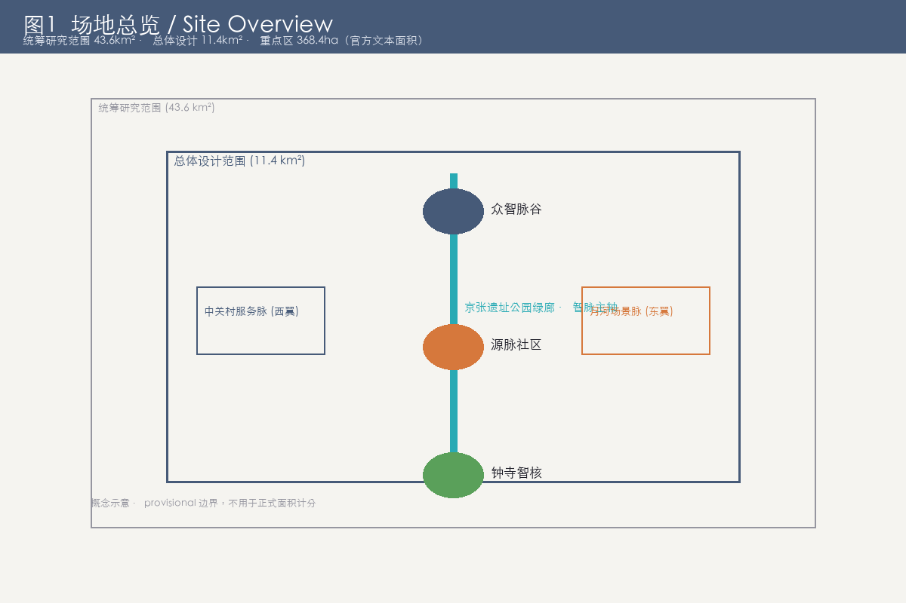
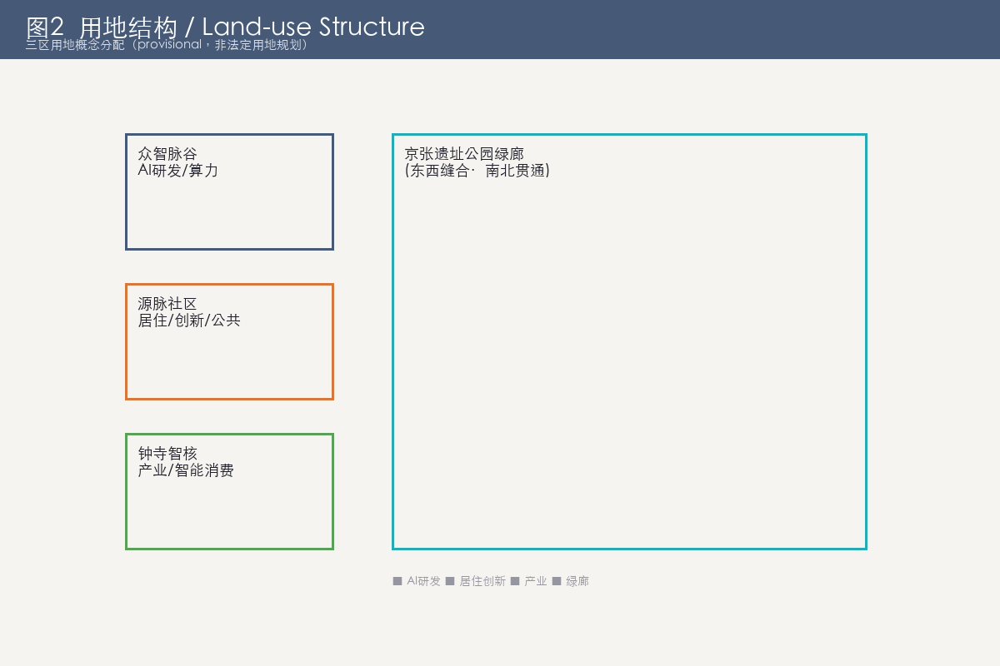
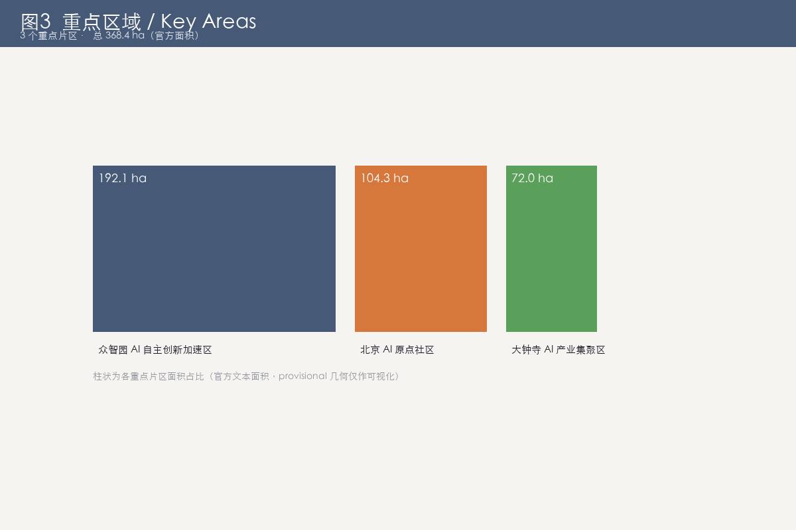
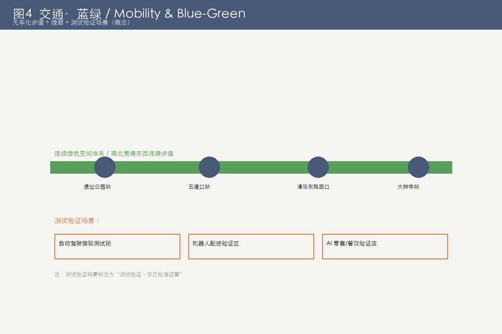
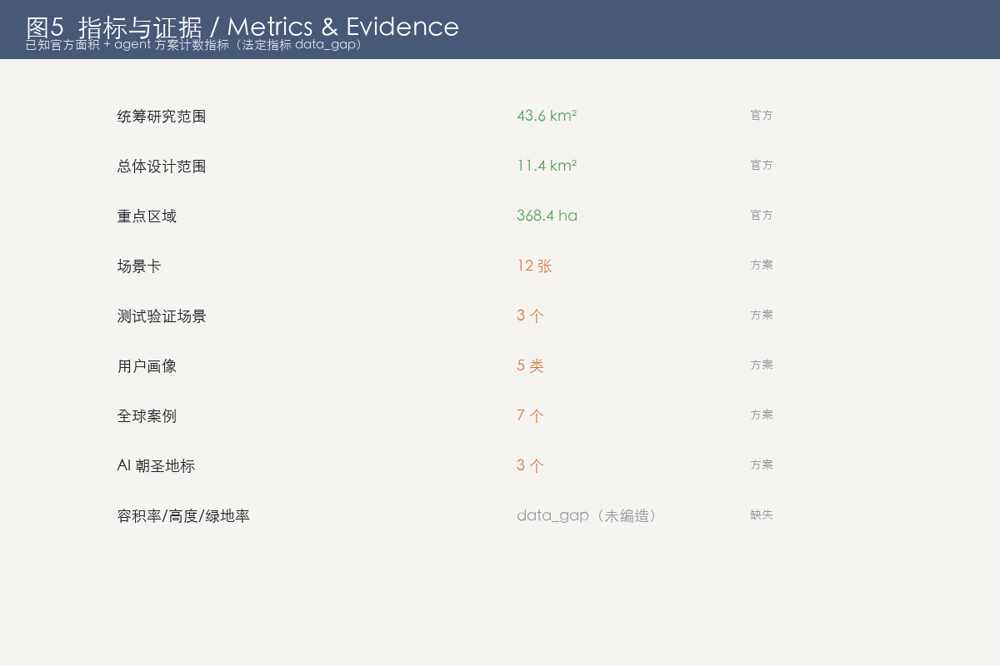

京张智脉 · 百年创新带 (Jing-Zhang Synapse Belt)
边界声明：本方案全部空间落地内容均为概念建议 / 参考方案，不构成政府审定结论；法定指标官方未提供，不予编造；边界为 provisional 几何，不用于正式面积计分。
本文件为 proposal.md 的轻量 HTML 渲染。完整双语正文见 proposal.md / proposal.zh.md / proposal.en.md。六大任务（agent.1~agent.6）覆盖：总体概念与命名、AI 全栈自主与生态、AI+ 场景赋能、AI 公共空间与朝圣地标、文化融合叙事、全球活动与长期运营。
总体空间结构概览
以詹天佑人字形铁路为文脉意象，京张遗址公园绿廊串联「一脊三节点两翼闭环」的创新城区结构。

用地结构与拆改留
概念性用地沿绿廊混合，强调小尺度、可步行；拆改留（retain-renovate-demolish）以机制示意，不列具体建筑清单。

重点区域详细设计
三片重点区域：AI 原点社区（源脉社区）、众智园 AI 自主创新加速区（众智脉谷）、大钟寺 AI 产业集聚区（钟寺智核）。

蓝绿空间、慢行与公共空间
蓝绿网络以遗址公园绿廊为核心，向东延展至月河亲水带，形成连续公共活动网络。

指标体系与合规证据
指标体系见 metrics.json（含已知指标与 data_gap 标注）；合规矩阵见 compliance_matrix.json，覆盖公告 1.3–1.5 与任务书 agent.1–agent.6 共 23 项要求。

核心指标（证据）
- 统筹研究范围 43.6 km²（官方）
- 总体设计范围 11.4 km²（官方）
- 重点区域 368.4 ha（官方）
- 场景卡 12 / 测试验证 3 / 用户画像 5 / 全球案例 7 / 地标 3（方案计数）
- 容积率 / 高度 / 绿地率：data_gap（未编造）